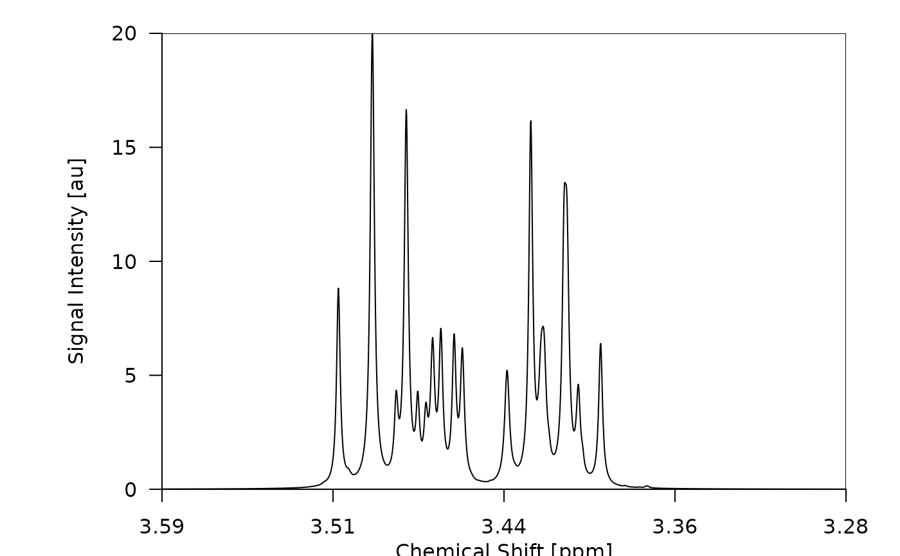
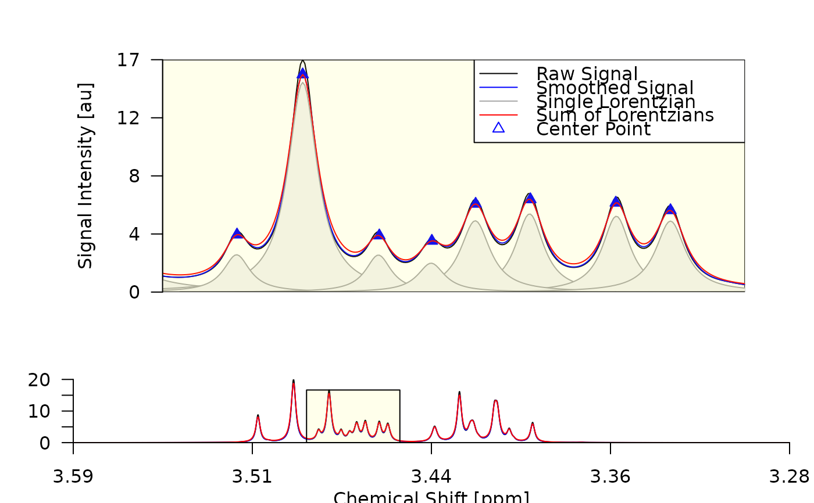
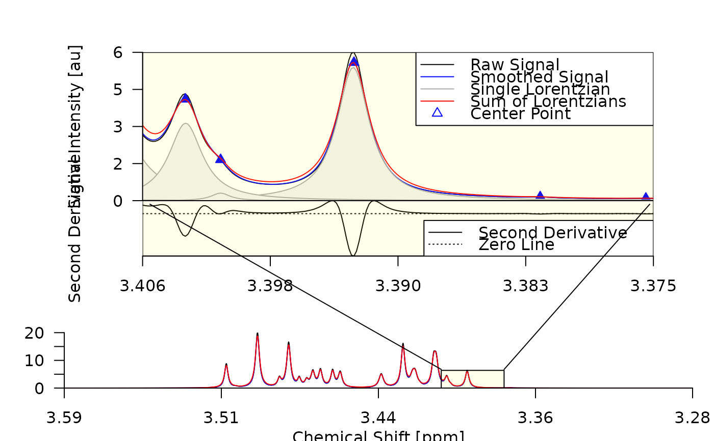
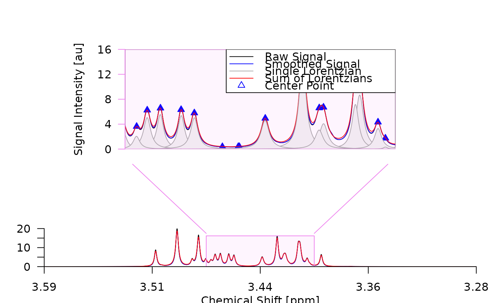
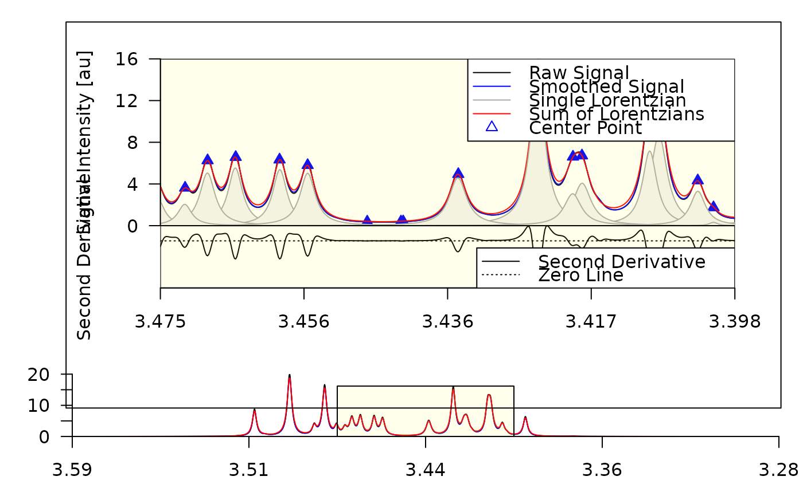
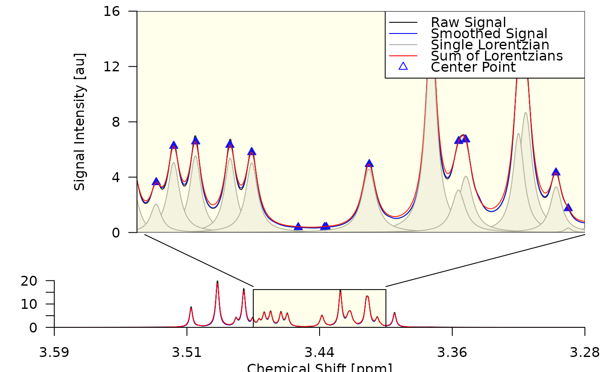

Plot a spectrum and zoom in on a specific region.
![[Experimental]](figures/lifecycle-experimental.svg)
Arguments
- x
An object of type
spectrum,decon0,decon1,decon2oralign. For details see Metabodecon Classes.- ...
Additional arguments passed to
draw_spectrum()for every sub figure. See 'Details'.- obj
An object of type
spectrumordecon2. Usually auto generated fromx, but can be set manually in case the default conversion is not sufficient.- foc_frac
A numeric vector specifying the start and end of the focus region as fraction of the full spectrum width. Only used if
foc_rgnis set to NULL.- foc_rgn
A numeric vector specifying the start and end of the focus region in ppm. If set to NULL,
foc_fracis used to determine the focus region. If bothfoc_rgnand are set to NULL, a suitable focus region is chosen automatically. Takes precedence overfoc_frac.- sub1, sub2, sub3
List of arguments passed to
draw_spectrum()when drawing sub figure 1-3. See 'Details'.- mar
A numeric vector of length 4 passed, which specifies the margins of the plot. Passed to
par(). If set toNULL, a suitable value is chosen automatically.- frame
A list of values passed to
box()when drawing the frame around plot region. If set toNULL, no frame is drawn.- con_lines
A list of values passed to
lines()when drawing the connecting lines between sub figure 1 and the focus rectangle in sub figure 3. See 'Details'. If set toNULL, the connecting lines are not drawn.
Details
This function first initializes a new plotting canvas. After that it calls
draw_spectrum() multiple times to draw the following sub figures onto the
plotting canvas:
The signal intensities in the focus region
The second derivative in the focus region
The signal intensities over all datapoints
The argument lists for the individual calls to draw_spectrum() are
determined at runtime and depend on the arguments passed to plot_spectrum()
as well as the currently active graphics device. To customize the appearance
of the individual sub plots, you can overwrite each value passed to
draw_spectrum() by providing a corresponding named element in sub1,
sub2 or sub3.
A sketch of the resulting figure is shown below.
__________________________________________
| ______________1_____________ |
| | Sub1: Signal Intensity in | |
| | Focus Region | |
| | /\ | |
| | / \ | |
| | / \ /\ | |
| 11| / \/ \ |7 |
| | /\ / \ | |
| | / \/ \ | |
| | / \ | |
| |__/___________0__________\__| |
| | Sub2: Second Derivative | |
| 11| in Focus Region |7 |
| |____________________________| |
| 3 |
| __________________3_________________ |
| | Sub3: Signal Intensity over all | |
| | Datapoints ________________ | |
| 5 | | Focus Rectangle| |1|
| | /\ | /\ | | |
| | / \ | / \/\ | | |
| | / \ /\ | /\/ \ | | |
| |__/______\_/__\_|__/__________\__|__| |
|______________________5___________________|Note that the figure created by plot_spectrum() can be part of a
multi-figure configuration as created when setting mfrow or mfcol via
par(). Example:
_______________________________________
| Plot Spectrum with | Other Figure |
| sub3 = TRUE | Other Figure |
| ___________ | ___________ |
| | Sub Fig 1 | | | x x | |
| |___________| | | x | |
| |_Sub_Fig_2_| | | x | |
| _________________ | | x x | |
| | Sub Fig 3 | | | x | |
| |_________________| | |___________| |
|______________________|_______________|
| Some other Figure | Plot Spectrum |
| | sub3 = FALSE |
| _________________ | ___________ |
| | ___ | | | Sub Fig 1 | |
| | ___/ \___ | | | | |
| |/ \____| | |___________| |
| | | | | Sub Fig 2 | |
| |_________________| | |___________| |
|______________________|_______________|Examples
## 1. Prepare a deconvoluted spectrum as input
spec <- read_spectrum(metabodecon_file("sim/sim_01"))
decon <- generate_lorentz_curves_sim(spec)
## 2.1. Plot the full (non-deconvoluted) spectrum
## 2.2. Remove connecting lines, and focus on a specific region specified in ppm
## 2.3. Show second derivative and focus on a specific region specified as fraction
## 2.4. Change color of focus rectangle and margins of sub figure 1
## 2.5. Hide xlab and show second derivative
## 2.6. Change the figure region for sub figure 1
plot_spectrum(spec, sub1 = FALSE)

plot_spectrum(decon, foc_rgn = c(3.49, 3.45), con_lines = FALSE)

plot_spectrum(decon, sub2 = TRUE, foc_frac = c(0.40, 0.30))

plot_spectrum(decon,
sub1 = list(mar = c(3, 6, 3, 6), lt_axis = list(col = "violet")),
foc_rect = list(border = "violet", col = transp("violet")),
con_lines = list(col = "violet")
)

plot_spectrum(decon,
sub2 = TRUE,
sub3 = list(bt_text = list(text = "")),
frame = TRUE,
con_lines = FALSE
)

plot_spectrum(decon, sub1 = list(fig_rgn_npc = c(0,1,.3,1), mar = c(0,5,0,0)))
